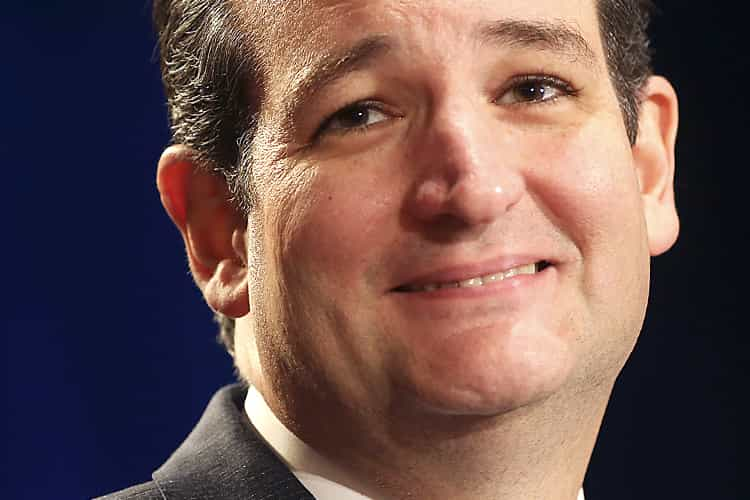
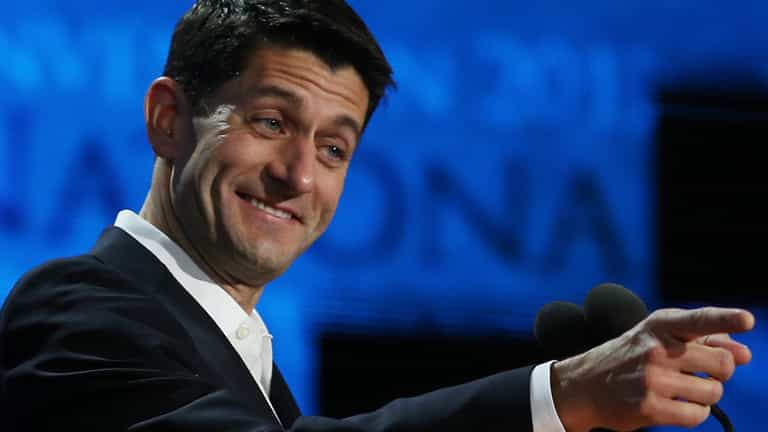

< < < Back
Donald Trump’s Loss In Wisconsin Sets The Stage For Carnage In The Republican Convention – Return Of Kings
Tuesday night’s primary in Wisconsin is the first GOP primary since Arizona and Utah voted two weeks ago, and the party establishment has declared it to be the hill they’re going to die on. With Donald Trump’s loss to Ted Cruz (48.3% vs 35.1%), the party bosses will continue throwing everything they can at him hoping to slow or stop his ascent to the presidency. In Wisconsin, their efforts bore fruit, but this now allows for a contentious Republican National Convention that can split the party in two.
Trump’s setback in Wisconsin comes after a poor week for the candidate, in which he walked into a gotcha question on abortion posed by MSNBC’s Chris Matthews and suffered for it. Additionally, the Cruz campaign and the GOP’s bosses have been pulling dirty tricks to reduce Trump’s delegate lead: for example, in Louisiana, Cruz was able to gain a plurality of delegates despite losing to Trump in the popular vote.
While it may seem like the Trump Train is going off the tracks, the GOP establishment and the mainstream media will need to work a lot harder to end Trump’s presidential aspirations. In particular, Trump’s opponents are hobbled by their lack of resources and an unfavorable slate of primary contests coming up. Wisconsin will definitely be a lost battle for Trump, but the war is far from over.
With Cruz, You Lose… Lots of Money

Wisconsin was always going to be a state that Trump would struggle in; as the New York Times’ Nate Cohn reported, the Badger State’s demographics are tilted in Cruz’s favor. Trump performs best in states with large numbers of minorities, which is why he’s swept the South, Northeast and industrial Midwest as well as the Latino-heavy Western states of Nevada and Arizona. Cruz performs best in predominately white states like Iowa, Kansas and Utah that have been somewhat spared the horrors of globalization and multiculturalism, both of which Trump attacks in his speeches.
While parts of Wisconsin has been negatively impacted by NAFTA and free trade, the state as a whole is similar to neighboring Iowa (which Cruz won): white, agrarian and cucked. Additionally, Wisconsinites dominate the GOP: both House Speaker Paul Ryan and RNC Chairman Reince Priebus are from Janesville. The Wisconsin Republican Party has unified against Trump to a degree yet unseen in the current election cycle, with failed Governor Scott Walker’s endorsement of Cruz the cherry on the shit sundae.
I’ve seen this myself. Yesterday, I went to Madison (the state capital) and Milwaukee to attend a Ted Cruz town hall and a Donald Trump rally, respectively. While Trump’s rallies in Iowa and Illinois were sold-out events, his Milwaukee rally drew a comparatively lackluster crowd of 1,500-2,000 people. Not only that, there weren’t even any protesters at Trump’s rally, though that was probably because Bernie Sanders was holding a competing event nearby.
Yet despite the seven nation army of cuckservatives aligned against the Donald, their chosen flunky Ted Cruz had to put up a struggle. Even with demographics and the might of the Wisconsin GOP on his side, 56 percent of Wisconsin Republicans oppose Ted Cruz. Additionally, the Cruz campaign has been burning through money at an astronomical rate just trying to keep up with Trump.
A Vote For Ted Cruz Is A Vote For Paul Ryan

Donald Trump’s opponents have conceded that neither Ted Cruz nor John Kasich will be able to overtake him in the delegate count, particularly with most of the remaining primary states (New York, California, New Jersey etc.) favorable to him. As a result, they’ve switched their strategy to denying him the 1,237 delegates he needs to win the nomination on the first ballot of the Republican convention this summer.
While Ted Cruz and his fanboys might fantasize about him winning the nomination in a brokered convention, it’s not likely to happen. Beyond Cruz being ineligible to serve due to being a natural-born Canadian, he’s widely despised by his fellow Republicans for his habitual dishonesty and abrasive attitude. The only reason he’s currently racking up endorsements from party insiders like Jeb Bush and Lindsey Graham is because they want to use him as a club to beat Trump with.
GOP establishment hacks have begun floating the idea of nominating House Speaker (and 2012 vice presidential nominee) Paul Ryan as a compromise candidate at the convention. Not only would this represent an unprecedented insult to the party’s base, nominating Ryan would guarantee a Democratic victory in November. The Mitt Romney/Paul Ryan brand of Republicanism is so repulsive to voters that not only did it lose them the 2012 election (an election they should have won due to Obama’s unpopularity), Ryan’s own hometown refused to support him.
In any event, Donald Trump and his supporters will need to turn the heat up after his loss in Wisconsin in order to thwart the GOP establishment. Voting for Ted Cruz will ensure that the nomination goes to Ryan, Romney or another Wall Street-owned company man who will both disregard the interests of the American people and lose to the Democrats. If you’re serious about pulling up the floorboards of the GOP to expose the rot within, Trump is your only option.
Read Next: FEC Filing: Mitt Romney And The Republican Establishment Ready To Steal Trump’s Nomination?